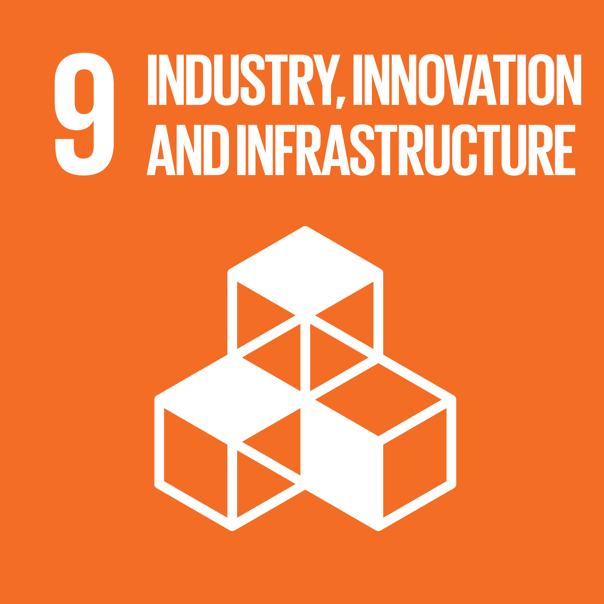
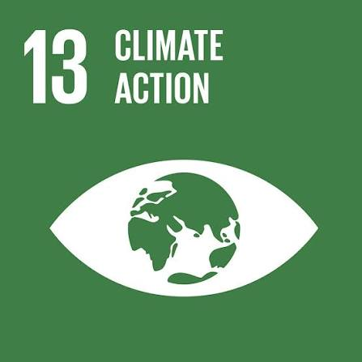

Publications
Nine years of insights, policy recommendations, and knowledge outputs from the Sustainability Table Discourse Series.
Sustainability Outlook
The STS Sustainability Outlook will feature in-depth analysis, sector reports, and forward-looking perspectives on Nigeria's sustainable development journey.
The Sustainability Outlook is currently in development and will be made available ahead of the 10th edition. Follow @sustainability_table on Instagram for announcements, or register your place now to be first in the room.
Reach & Scale
Since inception, STS has continued to expand its reach and influence across government, business, and civil society.
From Dialogue to Action
Over nine editions, STS recommendations have been reflected in national and sub-national reforms. STS does not claim sole credit — each outcome reflects sustained efforts across government, regulators, civil society, and the private sector.

STS raised this in 2020, calling for formal designation of telecoms infrastructure as Critical National Infrastructure. Addressed in 2024 via the CNII Order, providing legal protection for fibre networks, data centres, and towers.

Between 2019 and 2023, STS consistently advocated for a national carbon framework. Formalised in 2025 alongside the Carbon Market Activation Policy (CMAP), positioning Nigeria to attract climate finance at scale.

STS highlighted the need for structured EPR systems in 2019. By 2025, Lagos State commenced full enforcement of its single-use plastics ban while national EPR frameworks were strengthened.
STS 2022 emphasised policy support for locally driven innovation. The Nigerian Startup Act was enacted that same year, introducing tax reliefs, R&D support, and a structured framework for startups.
Between 2021 and 2023, STS prioritised discussions on green and blended finance. Nigeria issued a sovereign green bond in 2025, alongside subnational issuances such as Lagos State's programme.

STS encouraged sub-national climate planning between 2021 and 2023. Lagos State adopted its Climate Adaptation and Resilience Plan and long-term development framework between 2023 and 2024.
Beyond the Convening
STS has expanded from a dialogue platform into one that also enables practical implementation and supports early-stage sustainability innovation.
Standard Chartered Partnership
In 2022, STS formalised its first major institutional partnership with Standard Chartered Bank to deliver a Sustainability and Financial Literacy Initiative targeted at secondary school students — bringing the SDGs into the classroom.
Sustainability Art Exhibitions
From 2021 to 2023, STS hosted sustainability-focused art exhibitions beginning with The Earth Speaks (2021), bringing Nigerian and international artists together to explore themes of climate change, consumption, and environmental transformation.
2024 Hackathon Pitch Competition
STS launched its first direct investment in sustainability enterprises. Ten startups were shortlisted; the top four winners received seed grants of ₦350,000–₦1,500,000 plus structured mentorship. Results within one year were transformative.
Winners: QIQI Farms · Troway Environmental Services · PlastiBuild Creative Solutions · Cabax Farms
STS Monographs
Over the past decade, the Sustainability Table Discourse Series has consolidated its engagements into a growing body of knowledge through annual monographs. These works reflect the evolution of STS from foundational dialogue on the green economy to broader discussions on digital transformation, climate finance, and systemic development challenges.